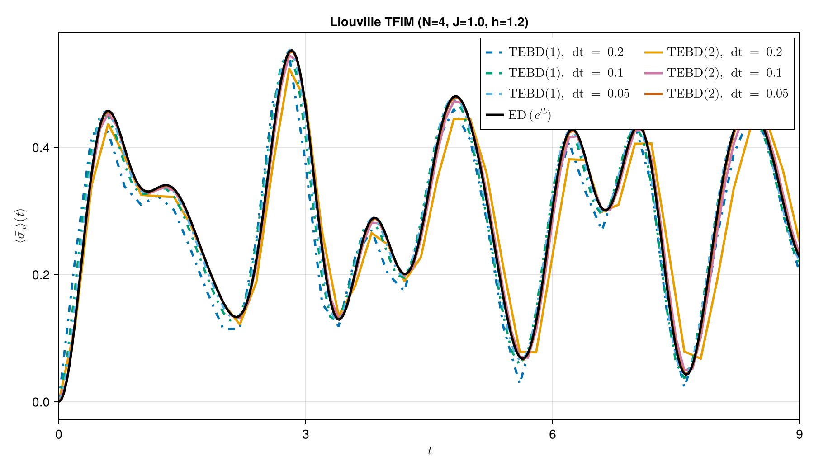
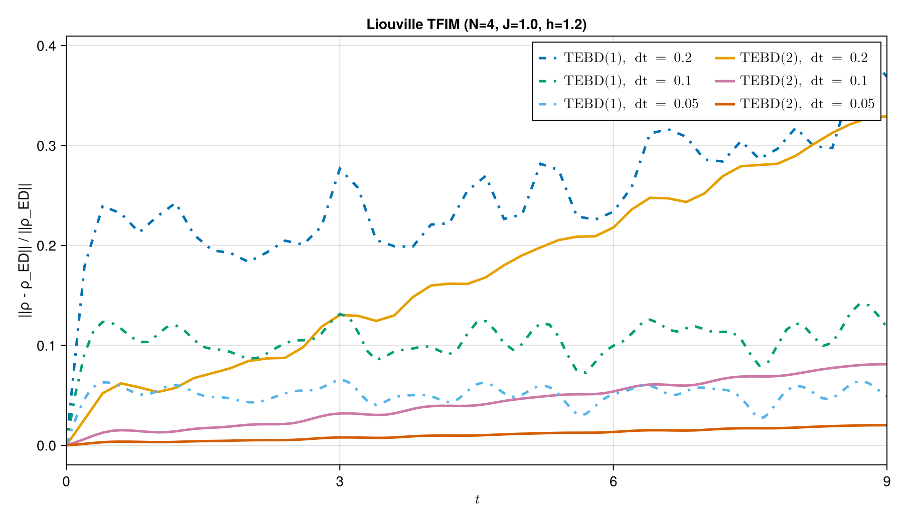

TEBD time evolution
Time-evolving block decimation (TEBD) approximates the time-evolution operator by a sequence of local gates. In this example we use TEBD to evolve a transverse-field Ising chain and compare the result with exact diagonalization.
We run the same unitary dynamics in two representations:
- Hilbert space: evolve an MPS state
ψ(t). - Liouville space: evolve the vectorized density matrix
ρ(t).
For a closed system, both descriptions should agree.
See also the Unitary Dynamics tutorial for TEBD/TDVP background, and scripts/tebd_tfim_unitary.jl for the full benchmark script that regenerates the figures below.
Setup
using Printf
using ProcessTensors
using ITensors
using LinearAlgebra
function tfim_hamiltonian(N::Int; J::Float64=1.0, h::Float64=1.2)
os = OpSum()
for j in 1:(N - 1)
os += -J, "Z", j, "Z", j + 1
end
for j in 1:N
os += -h, "X", j
end
return os
end
function single_site_pauli_mpos(op::AbstractString, physical_sites)
N = length(physical_sites)
return MPO{Hilbert}[
let os = OpSum()
os += 1.0, op, j
MPO(os, physical_sites)
end for j in 1:N
]
endsingle_site_pauli_mpos (generic function with 1 method)For larger systems, increase N; the TEBD code is unchanged, while the ED reference should be omitted.
const N = 4
const J = 1.0
const h = 1.2
const T_max = 9.0
const dt_list = Float64[0.2, 0.1, 0.05]
const trotter_orders = (1, 2)
const maxdim = 128
const cutoff = 1e-12
const n_exact = 281281Model and initial state
The transverse-field Ising model on $N$ spins has Hamiltonian
\[H = -J\sum_{j=1}^{N-1} \sigma^z_j \sigma^z_{j+1} - h\sum_{j=1}^{N} \sigma^x_j.\]
We start from the product state $|\uparrow\rangle^{\otimes N}$.
physical_sites = siteinds("S=1/2", N)
liouv_sites_shared = liouv_sites(physical_sites)
os_H = tfim_hamiltonian(N; J=J, h=h)
H_mpo = MPO(os_H, physical_sites)
jump_ops = Tuple{Number, String, Int}[]
ψ0 = MPS(physical_sites, fill("Up", N))
ρ0 = to_dm(ψ0)
ρ0_vec = to_liouville(ρ0; sites=liouv_sites_shared)
z_mpos = single_site_pauli_mpos("Z", physical_sites)
x_mpos = single_site_pauli_mpos("X", physical_sites)
@assert isapprox(real(sum(inner(ψ0', O, ψ0) for O in z_mpos) / N), 1.0; atol=1e-10)Exact diagonalization reference
We use ED only to make the TEBD approximation error visible. The scalable method is TEBD itself.
In Liouville space the vectorized density matrix obeys $|\rho(t)\rangle\rangle = e^{t\mathcal{L}}|\rho(0)\rangle\rangle$ with $\mathcal{L}\rho = -i[H,\rho]$ for closed dynamics.
function hilbert_mpo_to_dense(ρ::AbstractMPO{Hilbert}, physical_sites)
T = foldl(*, ρ)
A = Array(T, prime.(physical_sites)..., physical_sites...)
return reshape(ComplexF64.(A), prod(dim.(physical_sites)), prod(dim.(physical_sites)))
end
function hilbert_matrix_to_mpo(M::AbstractMatrix{<:Number}, physical_sites)
dims = vcat(dim.(prime.(physical_sites)), dim.(physical_sites))
T = ITensor(reshape(ComplexF64.(M), Tuple(dims)), prime.(physical_sites)..., physical_sites...)
return MPO(T, physical_sites)
end
function dense_liouvillian_matrix(os_H::OpSum, jump_ops, physical_sites, liouv_sites_shared)
L_mpo = MPO_Liouville(os_H, liouv_sites_shared; jump_ops=jump_ops)
d = prod(dim.(physical_sites))
d2 = d * d
L_dense = zeros(ComplexF64, d2, d2)
for b in 1:d, a in 1:d
q = a + (b - 1) * d
E = zeros(ComplexF64, d, d)
E[a, b] = 1.0
basis_q = to_liouville(hilbert_matrix_to_mpo(E, physical_sites); sites=liouv_sites_shared)
σ_q = apply(L_mpo, basis_q; cutoff=0.0, maxdim=typemax(Int))
ρ_out = hilbert_mpo_to_dense(to_hilbert(σ_q), physical_sites)
L_dense[:, q] = vec(ρ_out)
end
return L_dense
end
state_to_density_dense(state::AbstractMPS{Hilbert}, physical_sites) =
hilbert_mpo_to_dense(to_dm(state), physical_sites)
state_to_density_dense(state::AbstractMPS{Liouville}, physical_sites) =
hilbert_mpo_to_dense(to_hilbert(state), physical_sites)
density_error(ρ::AbstractMatrix, ρ_ref::AbstractMatrix) =
norm(ρ - ρ_ref) / max(norm(ρ_ref), eps(Float64))
function dense_one_site_operator(op_name::AbstractString, physical_sites, site::Int)
local_ops = Matrix{ComplexF64}[]
for (j, s) in enumerate(physical_sites)
if j == site
push!(local_ops, Array(op(op_name, s), prime(s), s))
else
push!(local_ops, Matrix{ComplexF64}(I, dim(s), dim(s)))
end
end
return foldl(kron, local_ops)
end
function exact_density_at(t::Real, L_dense::AbstractMatrix, vec0::AbstractVector, d::Int)
Lt = ComplexF64.(L_dense)
v0 = ComplexF64.(vec0)
vt = iszero(t) ? v0 : exp(t * Lt) * v0
return reshape(vt, d, d)
end
function mean_sx_from_density(ρ::AbstractMatrix, x_ops)
return real(sum(tr(ρ * O) for O in x_ops) / length(x_ops))
end
function exact_sx_trajectory(L_dense, vec0, d, x_ops, times::AbstractVector)
return Float64[mean_sx_from_density(exact_density_at(t, L_dense, vec0, d), x_ops) for t in times]
end
function mean_sx(state::AbstractMPS{Hilbert}, x_mpos)
return real(sum(inner(state', O, state) for O in x_mpos) / length(x_mpos))
end
function mean_sx(state::AbstractMPS{Liouville}, x_mpos)
ρ_h = to_hilbert(state)
s = 0.0
for O in x_mpos
ρO = apply(O, ρ_h; alg="naive", truncate=false)
s += real(tr(ρO))
end
return s / length(x_mpos)
end
println("Building Liouville ED reference...")
d = prod(dim.(physical_sites))
vec0 = vec(ComplexF64.(hilbert_mpo_to_dense(ρ0, physical_sites)))
L_dense = dense_liouvillian_matrix(os_H, jump_ops, physical_sites, liouv_sites_shared)
x_ops = [dense_one_site_operator("X", physical_sites, j) for j in 1:N]
t_exact = collect(range(0.0, T_max; length=n_exact))
sx_exact = exact_sx_trajectory(L_dense, vec0, d, x_ops, t_exact)
println("Final Sx: ", sx_exact[end])Building Liouville ED reference...
Final Sx: 0.22775169984315308
Hilbert-space TEBD
tebd applies a Suzuki–Trotter product of local gates. Trotter{1}() and Trotter{2}() differ in the splitting order; second order is usually more accurate at the same timestep.
function run_hilbert_tebd(ψ0, os_H, T_max, dt, alg; maxdim, cutoff)
ψ = copy(ψ0)
times = Float64[0.0]
rho_errs = Float64[density_error(state_to_density_dense(ψ, physical_sites), exact_density_at(0.0, L_dense, vec0, d))]
sx = Float64[mean_sx(ψ, x_mpos)]
t = 0.0
elapsed = @elapsed begin
while t < T_max - 1e-12
Δt = min(dt, T_max - t)
ψ = tebd(ψ, os_H, Δt, Δt; maxdim=maxdim, cutoff=cutoff, alg=alg)
t += Δt
push!(times, t)
ρ_ed = exact_density_at(t, L_dense, vec0, d)
push!(rho_errs, density_error(state_to_density_dense(ψ, physical_sites), ρ_ed))
push!(sx, mean_sx(ψ, x_mpos))
end
end
return (; times, rho_errs, sx, elapsed, max_bond=maxlinkdim(ψ))
end
function print_tebd_summary(label::AbstractString, n::Int, dt::Real, result)
@printf("%s TEBD(%d) with dt=%.2f\n", label, n, dt)
@printf(" Total time taken: %.3f s\n", result.elapsed)
@printf(" |ρ - ρ_ED|: %.3e\n", result.rho_errs[end])
@printf(" max bond dim: %d\n", result.max_bond)
println()
end
println("Hilbert-space TEBD")
println("------------------")
hilbert_runs = Dict{Tuple{Int, Float64}, NamedTuple}()
for n in trotter_orders, dt in dt_list
result = run_hilbert_tebd(ψ0, os_H, T_max, dt, Trotter{n}(); maxdim=maxdim, cutoff=cutoff)
hilbert_runs[(n, dt)] = result
print_tebd_summary("Hilbert", n, dt, result)
endHilbert-space TEBD
------------------
Hilbert TEBD(1) with dt=0.20
Total time taken: 1.277 s
|ρ - ρ_ED|: 3.688e-01
max bond dim: 4
Hilbert TEBD(1) with dt=0.10
Total time taken: 2.489 s
|ρ - ρ_ED|: 1.182e-01
max bond dim: 4
Hilbert TEBD(1) with dt=0.05
Total time taken: 4.915 s
|ρ - ρ_ED|: 4.884e-02
max bond dim: 4
Hilbert TEBD(2) with dt=0.20
Total time taken: 1.353 s
|ρ - ρ_ED|: 3.293e-01
max bond dim: 4
Hilbert TEBD(2) with dt=0.10
Total time taken: 2.563 s
|ρ - ρ_ED|: 8.122e-02
max bond dim: 4
Hilbert TEBD(2) with dt=0.05
Total time taken: 5.131 s
|ρ - ρ_ED|: 2.020e-02
max bond dim: 4
Liouville-space TEBD
The same tebd interface works on MPS{Liouville}. With an empty jump_ops tuple, the Liouvillian reduces to the unitary commutator and the dynamics stays closed. However, the maximum bond dimensions and the Liouville-space dimensions are larger than that in the Hilbert space, making them expensive for larger systems.
function run_liouville_tebd(ρ0_vec, os_H, T_max, dt, alg; maxdim, cutoff, jump_ops)
current = copy(ρ0_vec)
times = Float64[0.0]
rho_errs = Float64[density_error(state_to_density_dense(current, physical_sites), exact_density_at(0.0, L_dense, vec0, d))]
sx = Float64[mean_sx(current, x_mpos)]
t = 0.0
elapsed = @elapsed begin
while t < T_max - 1e-12
Δt = min(dt, T_max - t)
current = tebd(
current,
os_H,
Δt,
Δt;
jump_ops=jump_ops,
maxdim=maxdim,
cutoff=cutoff,
alg=alg,
)
t += Δt
push!(times, t)
ρ_ed = exact_density_at(t, L_dense, vec0, d)
push!(rho_errs, density_error(state_to_density_dense(current, physical_sites), ρ_ed))
push!(sx, mean_sx(current, x_mpos))
end
end
return (; times, rho_errs, sx, elapsed, max_bond=maxlinkdim(current))
end
println("Liouville-space TEBD")
println("--------------------")
liouville_runs = Dict{Tuple{Int, Float64}, NamedTuple}()
for n in trotter_orders, dt in dt_list
result = run_liouville_tebd(
ρ0_vec, os_H, T_max, dt, Trotter{n}();
maxdim=maxdim, cutoff=cutoff, jump_ops=jump_ops,
)
liouville_runs[(n, dt)] = result
print_tebd_summary("Liouville", n, dt, result)
end
@assert all(isfinite, hilbert_runs[(1, dt_list[1])].rho_errs)
@assert isapprox(
density_error(state_to_density_dense(ψ0, physical_sites), exact_density_at(0.0, L_dense, vec0, d)),
0.0;
atol=1e-12,
)Liouville-space TEBD
--------------------
Liouville TEBD(1) with dt=0.20
Total time taken: 7.024 s
|ρ - ρ_ED|: 3.688e-01
max bond dim: 16
Liouville TEBD(1) with dt=0.10
Total time taken: 2.635 s
|ρ - ρ_ED|: 1.182e-01
max bond dim: 16
Liouville TEBD(1) with dt=0.05
Total time taken: 5.260 s
|ρ - ρ_ED|: 4.884e-02
max bond dim: 16
Liouville TEBD(2) with dt=0.20
Total time taken: 1.485 s
|ρ - ρ_ED|: 3.293e-01
max bond dim: 16
Liouville TEBD(2) with dt=0.10
Total time taken: 2.953 s
|ρ - ρ_ED|: 8.122e-02
max bond dim: 16
Liouville TEBD(2) with dt=0.05
Total time taken: 5.863 s
|ρ - ρ_ED|: 2.020e-02
max bond dim: 16


- The same unitary TFIM dynamics can be evolved as an MPS state in Hilbert space or as a vectorized density matrix in Liouville space.
- Second-order Trotter (
Trotter{2}()) is usually more accurate than first order at the same time step. - Smaller
dtreduces Trotter error; the ED reference in this page is only a small-system audit, not the scalable method.